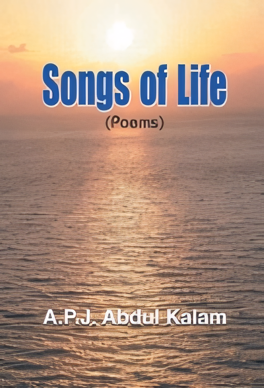
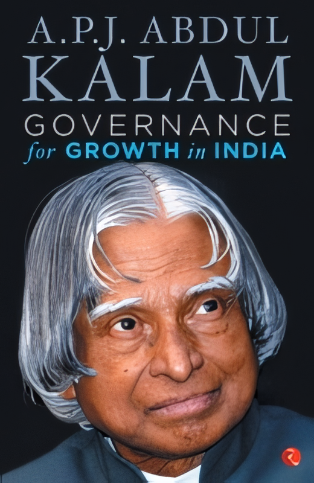
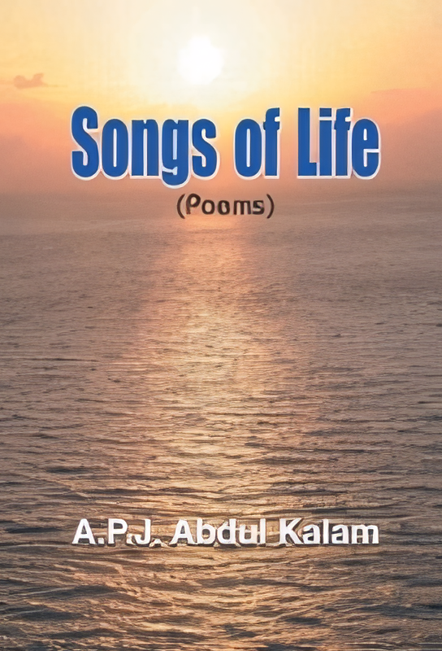
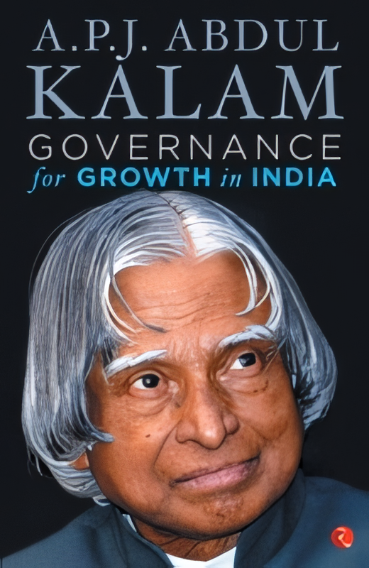

Dr. Avul Pakir Jainulabdeen Abdul Kalam, affectionately known as the People's President, left an indelible mark on Indian history as a scientist, visionary, and statesman. Born on October 15, 1931, in the serene town of Rameswaram, Tamil Nadu, Kalam's early years were shaped by the values of honesty, humility, and hard work instilled by his parents.Growing up amidst modest surroundings, Kalam's thirst for knowledge and fascination with the mysteries of the universe led him on a remarkable journey. After completing his education in aerospace engineering from the Madras Institute of Technology, he embarked on a career dedicated to scientific research and technological advancement.
Kalam's contributions to India's defense and space programs are unparalleled. His pivotal role in the development of indigenous missile technology earned him the title of the "Missile Man of India." Under his leadership, India successfully conducted its first satellite launch vehicle, catapulting the nation into the league of spacefaring nations.
Beyond his scientific prowess, Kalam's visionary leadership and unwavering commitment to national development propelled him to the highest echelons of power. In 2002, he assumed office as the 11th President of India, becoming the first scientist to hold this prestigious position. During his tenure, he endeared himself to the masses with his warmth, humility, and accessibility.
Kalam's presidency was marked by his relentless efforts to bridge the gap between the government and the people, especially the youth. He envisioned a technologically advanced and morally upright India, where every citizen had access to education, healthcare, and opportunities for growth.
Throughout his life, Kalam remained a beacon of hope and inspiration, particularly for the youth of India. He fervently believed in the transformative power of education and often engaged in interactions with students, urging them to dream big and strive for excellence.
Even after demitting office, Kalam continued to be an active advocate for societal progress and human welfare. He traveled extensively, delivering lectures, writing books, and mentoring aspiring leaders, leaving an indelible impression on all who crossed his path.
On July 27, 2015, while delivering a lecture at the Indian Institute of Management Shillong, Kalam breathed his last, leaving behind a legacy that continues to inspire millions. His life exemplified the quintessential Indian values of humility, integrity, and service to humanity, earning him the love and admiration of people across the globe.
Dr. APJ Abdul Kalam's journey from a humble beginning to becoming the epitome of excellence and leadership is a testament to the power of perseverance, dedication, and unwavering belief in oneself. His life continues to serve as a guiding light for generations to come, inspiring them to dream, dare, and make a difference in the world.


 


